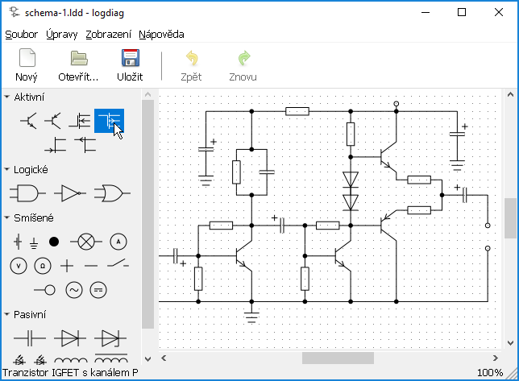

Obrázek 2: Výběr objektů v oblasti
p@janouch.name
verze 0.2.2,
2021-10-28

Tento dokument vás má za účel provést po aplikaci a pomoci vám se v ní zorientovat. Popis úkonů se přednostně vztahuje na operační systém Microsoft Windows, do jisté míry je však platný i pro jiné operační systémy.
Nejnovější verzi aplikace je možné stáhnout na následující webové adrese: https://git.janouch.name/p/logdiag.
Obrázek 1: Nabídka pro stahování na stránkách projektu
Až se ocitnete na webu, vyhledejte v záhlaví záložku s nápisem
Releases
a klepněte na ni. Zobrazí se přehled vydání a pod hlavičkami
Downloads
související soubory ke stažení. Instalační soubor pro Microsoft
Windows nese název ve stylu logdiag-verze-Windows-x86.exe
.
Proces instalace je velmi přímočarý. Po úvodní obrazovce je vyžadován souhlas s licencí. Pokud nerozumíte anglicky, její stručné shrnutí zní, že aplikaci smíte v nezměněné formě zcela volně používat a redistribuovat, ale nejsou vám poskytovány žádné záruky. Následuje výběr složky, do které chcete aplikaci nainstalovat, a složky pro umístění ve Start menu. V případě, že nenastala žádná náhlá chyba, už jen stačí potvrdit úspěšnou instalaci.
Pozor: Pokud aplikaci instalujete do složky, kde se nachází již existující instalace, mohou nastat potíže. Ačkoliv je to možné, nepokoušejte se z těch samých příčin instalovat ani více kopií vedle sebe. Nejdříve stávající instalaci odstraňte, například pomocí zástupce umístěného ve Start menu.
Každý diagram je tvořen z objektů, a s těmi se sdružují dále popsané operace. Budete-li chtít momentálně prováděnou operaci zrušit, můžete tak obvykle učinit stiskem klávesy Escape.
Jednotlivé objekty můžete vybírat levým kliknutím myší. Ty se v reakci na to vyznačí červenou barvou. Chcete-li vybrat objektů více, držte během klikání stisknutou klávesu Shift.
Obrázek 2: Výběr objektů v oblasti
Alternativně můžete táhnout myší z volné oblasti diagramu do prostoru, viz Obrázek 2. Vyberou se objekty obsažené ve vytvořeném obdélníku. Výběr lze zrušit klepnutím na prázdné místo.
Přesun objektů se provede tažením objektů myší na požadované místo. Pokud jsou tyto objekty součástí výběru, přesune se celý výběr. Ten lze též přesouvat pomocí kurzorových kláves.
Objekty odstraníte stisknutím klávesy Delete, případně z menu aplikace.
Značky představují nejdůležitější druh objektů. Do diagramu je vložíte výběrem z nabídky značek umístěné po levé straně hlavního okna aplikace a přetažením myší do diagramu na požadované umístění.
Otočit značku vloženou do diagramu můžete přes pravé tlačítko myši.
Terminálem se nazývá bod určený pro tvorbu spojení mezi značkami nebo jinými spojeními. Abyste z něj spojení vyvedli, nejdříve na něj najeďte kurzorem myši tak, aby se viditelně vyznačil kroužkem. Pak stiskněte levé tlačítko myši a přetáhněte kurzor myši na místo, kde chcete, aby spojení končilo.
 …
…

Obrázek 3: Propojení terminálů dvou značek
Při ukládání se ujistěte, že zadaný název souboru obsahuje příponu
.ldd
. V opačném případě se nezobrazí v dialogu pro otevření diagramu.
Pokud jste nějaký soubor již bez přípony uložili, napravíte to dodatečným
přidáním přípony k jeho názvu.
Tato funkcionalita zatím neexistuje, ale je možné tento nedostatek obejít
buď sejmutím snímku obrazovky klávesou PrintScreen a jeho vložením například
do aplikace Malování, nebo obdobně doplněním vašich textů do vytištěného
PDF souboru.